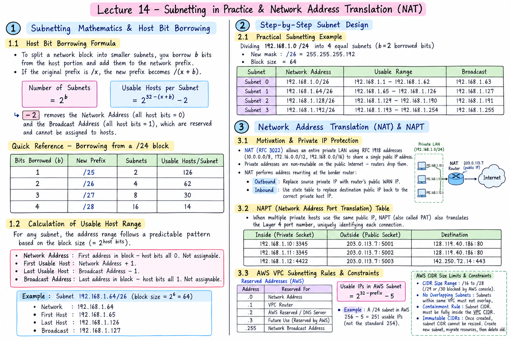

Short Notes & Visual Summary
Handwritten / quick summary notes for Lecture 14:

Click image to open high-resolution version in new tab
Subnetting Mathematics & Host Bit Borrowing
1.1 Host Bit Borrowing Formula
To split a network block into smaller subnets, you borrow $b$ bits from the host portion of the address and add them to the network prefix. If the original prefix is /x, the new prefix becomes /(x+b).
The −2 removes the Network Address (all host bits = 0) and the Broadcast Address (all host bits = 1), which are reserved and cannot be assigned to hosts.
| Bits Borrowed (b) | New Prefix | Subnets | Usable Hosts/Subnet |
|---|---|---|---|
| 1 | /25 | 2 | 126 |
| 2 | /26 | 4 | 62 |
| 3 | /27 | 8 | 30 |
| 4 | /28 | 16 | 14 |
1.2 Calculation of Usable Host Range
For any subnet, the address range follows a predictable pattern based on the block size (= $2^{\text{host bits}}$):
- Network Address: First address in block — host bits all 0. Not assignable.
- First Usable Host: Network Address + 1.
- Last Usable Host: Broadcast Address − 1.
- Broadcast Address: Last address in block — host bits all 1. Not assignable.
Example: Subnet 192.168.1.64/26 (block size = $2^6 = 64$):
- Network:
192.168.1.64 - First Host:
192.168.1.65 - Last Host:
192.168.1.126 - Broadcast:
192.168.1.127
Step-by-Step Subnet Design
2.1 Practical Subnetting Example
Dividing 192.168.1.0/24 into 4 equal subnets ($b = 2$ borrowed bits, new mask /26 = 255.255.255.192, block size = 64):
| Subnet | Network Address | Usable Range | Broadcast |
|---|---|---|---|
| Subnet 0 | 192.168.1.0/26 |
.1 – .62 | .63 |
| Subnet 1 | 192.168.1.64/26 |
.65 – .126 | .127 |
| Subnet 2 | 192.168.1.128/26 |
.129 – .190 | .191 |
| Subnet 3 | 192.168.1.192/26 |
.193 – .254 | .255 |
Network Address Translation (NAT) & NAPT
3.1 Motivation & Private IP Protection
NAT (RFC 3022) allows an entire private LAN using RFC 1918 addresses (10.0.0.0/8, 172.16.0.0/12, 192.168.0.0/16) to share a single public IP address on the WAN, conserving the scarce IPv4 address space. Private addresses are non-routable on the public Internet — routers drop them — so NAT performs address rewriting at the border router:
- Outbound: The source private IP is replaced with the router's single public WAN IP before the packet enters the Internet.
- Inbound: When a reply arrives, the router consults its state table and replaces the destination public IP back with the correct private host IP.
3.2 NAPT (Network Address Port Translation) Table
When multiple private hosts simultaneously use the same public IP, simple address-level NAT is insufficient. NAPT (also called PAT — Port Address Translation) extends NAT by also translating the Layer 4 port number, uniquely identifying each connection behind a single public IP:
| Inside (Private Socket) | Outside (Public Socket) | Destination |
|---|---|---|
192.168.1.10:3345 |
203.0.113.7:5001 |
128.119.40.186:80 |
192.168.1.11:3345 |
203.0.113.7:5002 |
128.119.40.186:80 |
192.168.1.12:4422 |
203.0.113.7:5003 |
142.250.72.14:443 |
Even when two internal hosts pick the identical ephemeral port (e.g. both use 3345), the router maps them to distinct public ports (5001 vs 5002). When return traffic arrives at port 5002, the router unambiguously delivers it to 192.168.1.11:3345.
3.3 AWS VPC Subnetting Rules & Constraints
When creating subnets inside an AWS Virtual Private Cloud (VPC), the standard IP reservation rules differ from classical networking. AWS reserves 5 addresses per subnet instead of the usual 2:
| Address | Reserved For |
|---|---|
.0 | Network Address |
.1 | VPC Router |
.2 | AWS Reserved / DNS Server |
.3 | Future Use (Reserved by AWS) |
.255 | Network Broadcast Address |
Therefore the usable host formula changes in AWS context:
$$\text{Usable IPs in AWS Subnet} = 2^{32-\text{prefix}} - 5$$For example, a /24 subnet in AWS yields $256 - 5 = 251$ usable host addresses (not the standard 254).
- CIDR Size Range: AWS enforces subnet masks between
/16(65,536 IPs) and/28(16 IPs, 11 usable). Tiny subnets such as/29or/30are blocked by the AWS console. - No Overlapping Subnets: Subnets within the same VPC must not have overlapping CIDR ranges. AWS validates this at creation time and rejects conflicting ranges.
- Containment Rule: Every subnet CIDR block must be fully contained within the parent VPC CIDR block. A subnet cannot extend beyond its VPC's address space.
- Immutable CIDRs: Once a subnet is created, its CIDR block is immutable — it cannot be resized. To change a subnet's size, you must create a new subnet with the desired CIDR, migrate all resources (EC2 instances, RDS databases, load balancers, etc.) to the new subnet, and delete the old one.
Original PDF Notes
Below is the original PDF document for reference: